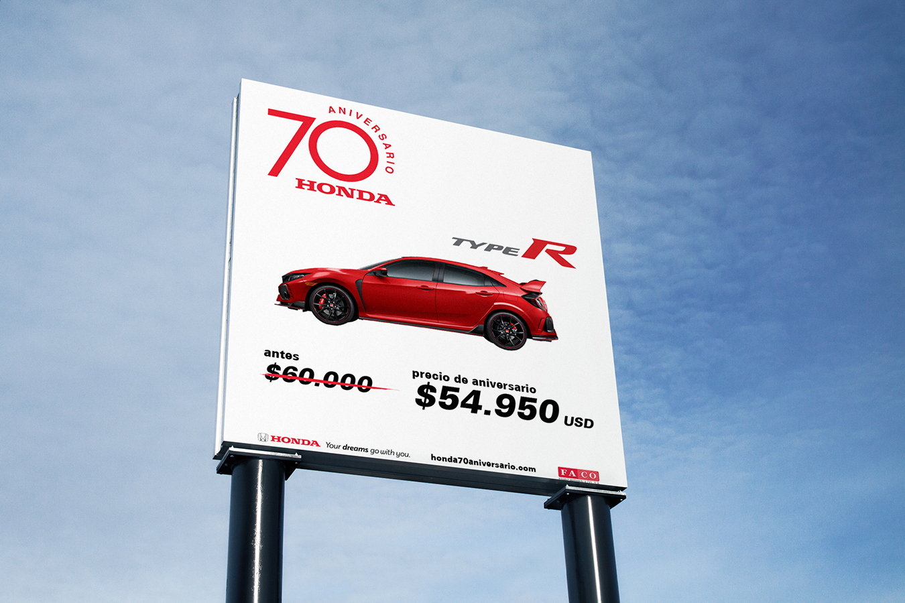

FACO Honda Costa Rica launched a summer campaign to celebrate the company’s 70 Anniversary in 2018. My role was to design eight different billboards that were displayed for 3 months in different metropolitan areas of Costa Rica. Alongside a published ad in the country's main newspaper 'La Nación'. The main purpose of this campaign was to promote the special offers on all their available models. Thus, the layout of designs created an emphasis on the sale price and the car itself.
These billboards and printed ad were part of a bigger summer campaign that included social media initiatives and a series of short films revolving around influential athlete, Lobito Fonseca. This all rounded campaign was showcased at the Costa Rican Effie Awards were it was awarded the Bronze recognition for the category of Brand Content & Management in 2019.